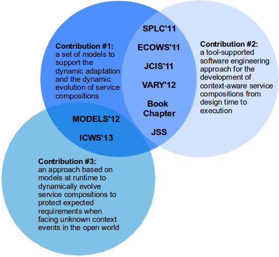

The contributions presented in this thesis are supported by several publications in relevant forums as depicted in Figure 1. We present the publications as follows. Each publication is organized under a category (e.g. journal or conference) and in chronological order.

Figure 1. The contributions of this thesis are supported by several publications.
Journal
Alférez, G. H., Pelechano, V., Mazo, R., Salinesi, C., Diaz, D., 2013. Dynamic adaptation of service compositions with variability models. Journal of Systems and Software (accepted article in press). DOI: http://dx.doi.org/10.1016/j.jss.2013.06.034.
Conferences
Alférez, G. H., Pelechano, V., 2011. Context-aware autonomous web services in software product lines. In: Proceedings of the 2011 15th International Software Product Line Conference. SPLC’11. IEEE Computer Society, Washington, DC, USA, pp. 100–109.
Alférez, G. H., Pelechano, V., 2011. Systematic reuse of web services through software product line engineering. In: 2011 9th IEEE European Conference on Web Services. ECOWS '11. pp. 192–199.
Ayora, C., Alférez, G. H., Torres, V., Pelechano, V., 2011. Procesos de negocio auto-adaptables al contexto. In: Álvarez, P., Del Arco, J., Luaces, M. (Eds.), Actas de las VII Jornadas de Ciencia e Ingeniería de Servicios. JCIS '11. Universidade da Coruña, pp. 147–160.
URL http://www.sistedes.es/ficheros/actas-conferencias/JCIS/2011.pdf.
Alférez, G. H., Pelechano, V., 2012. Dynamic evolution of context-aware systems with models at runtime. In: France, R., Kazmeier, J., Breu, R., Atkinson, C. (Eds.), Model Driven Engineering Languages and Systems. Vol. 7590 of Lecture Notes in Computer Science. Springer Berlin / Heidelberg, pp. 70–86.
Alférez, G. H., Pelechano, V., 2013. Facing uncertainty in web service compositions. In: Proceedings of the 20th IEEE International Conference on Web Services. ICWS '13. pp. 219–226.
Book Chapter
Pelechano, V., Fons, J., Alférez, G.H., Gómez, M., 2013. Desarrollo de Software Dirigido por Modelos: Conceptos, Métodos y Herramientas. RA-MA Editorial, Ch. Modelos en Tiempo de Ejecución, pp. 529 – 551.
Workshop
Ayora, C., Alférez, G. H., Torres, V., Pelechano, V., 2012. Applying CVL to business process variability management. In: Proceedings of VARiability for You. MODELS 2012. pp. 24–29.
URL http://vary2012.irisa.fr/VARY2012Proceedings.pdf.